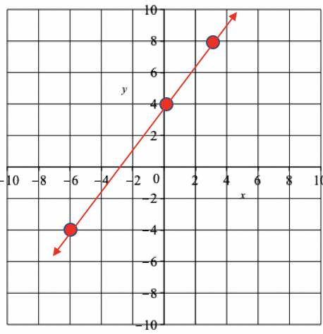

Section 3 Math 104 Problems
Students entering Math 104 should be able to successfuly complete the problems below.
Exercises Exercises
1.
Use the polynomial \(5x+2x^2y-4y\) to complete the following parts.
Identity the constant and variables for the term with the largest degree in the polynomial.
Given that \(x=4\) and \(y=-\dfrac{1}{4}\text{,}\) evaluate the polynomial expression.
-
Constants: \(5, 2, -4\)
Variables: \(x, y\)
- \begin{align*} 5(4) + 2(4)^2\left(-\frac{1}{4}\right) - 4\left(-\frac{1}{4}\right) \amp = 20+2(16)\left(-\frac{1}{4}\right) + 1 \\ \amp = 20-8+1\\ \amp = 13 \end{align*}
2.
Consider the linear equation \(4x-3y+12=0\text{.}\)
Solve the equation for \(y\text{.}\)
- Use the equation to complete the following table:
\(x\) \(y\) \(-6\) \(4\) \(3\)
Give the coordinates of the points found in part b., and then plot the points and graph the linear equation.
- \begin{gather*} -3y = -4x-12\\ y =\frac{4}{3}x + 4 \end{gather*}
\(x\) \(y\) \(-6\) \(-4\) \(0\) \(4\) \(3\) \(8\) - The points are \((-6,-4), (0,4)\text{,}\) and \((3,8)\text{.}\) The points and linear equation are graphed below. 
3.
In a classroom of \(25\) students, \(3\) are left-handed and \(22\) are right-handed.
What proportion of the class is left-handed?
Write the proportion found in part a as a percentage.
What is the ratio of left-handed students to right-handed students?
\(\displaystyle \dfrac{3}{25}\)
\(\displaystyle 6\%\)
\(\displaystyle 3: 22\)